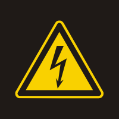

10.6 - SEGURANÇA EM INSTALAÇÕES ELÉTRICAS ENERGIZADAS
-
10.6.1
As intervenções em instalações elétricas com tensão igual ou superior a 50 Volts em corrente alternada ou superior a 120 Volts em corrente contínua somente podem ser realizadas por trabalhadores que atendam ao que estabelece o item 10.8 desta Norma.
-
10.6.1.1
Os trabalhadores de que trata o item anterior devem receber treinamento de segurança para trabalhos com instalações elétricas energizadas, com currículo mínimo, carga horária e demais determinações estabelecidas no Anexo III desta NR.
-
10.6.1.2
As operações elementares como ligar e desligar circuitos elétricos, realizadas em baixa tensão, com materiais e equipamentos elétricos em perfeito estado de conservação, adequados para operação, podem ser realizadas por qualquer pessoa não advertida.
-
10.6.2
Os trabalhos que exigem o ingresso na zona controlada devem ser realizados mediante procedimentos específicos respeitando as distâncias previstas no Anexo II.
-
10.6.3
Os serviços em instalações energizadas, ou em suas proximidades devem ser suspensos de imediato na iminência de ocorrência que possa colocar os trabalhadores em perigo.
-
10.6.4
Sempre que inovações tecnológicas forem implementadas ou para a entrada em operações de novas instalações ou equipamentos elétricos devem ser previamente elaboradas análises de risco, desenvolvidas com circuitos desenergizados, e respectivos procedimentos de trabalho.
-
10.6.5
O responsável pela execução do serviço deve suspender as atividades quando verificar situação ou condição de risco não prevista, cuja eliminação ou neutralização imediata não seja possível.